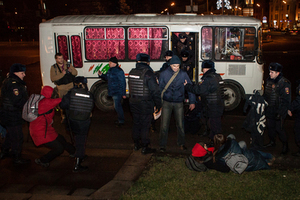
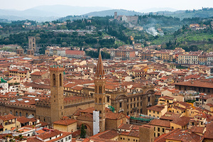
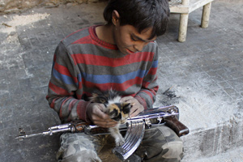
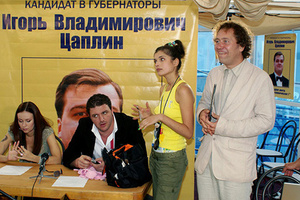
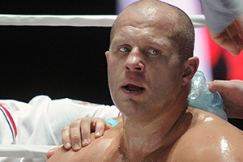

«Слепые зоны» внешней политики
Что видит и не видит Россия в боковые зеркала
Все в прошлом
Надо ли бояться возвращения 90-х

В центре Москвы задержали 10 сторонников Павленского и Дадина
Сотрудники правоохранительных органов задержали в центре Москвы 10 человек, устроивших акцию в поддержку художника Петра Павленского и гражданского активиста Ильдара Дадина. Мероприятие не было санкционировано, и полицейские прибыли к месту его проведения практически сразу после начала.
Россия —19:17 Сегодня
«Не собираемся губы надувать»
О чем Владимир Путин говорил с Владимиром Соловьевым
14:46 Сегодня
Силовые структуры —00:10 Сегодня
Петля правосудия
Обманувший дольщиков бизнесмен продал свою квартиру, чтобы дать взятку судье
Путешествия —00:06 Сегодня
Девять кругов по Флоренции
...или Что может вытерпеть русская женщина с сыном из любви к искусству
Наука и техника —08:58 19 декабря 2015
«Традиционные ценности нельзя противопоставить радикализму»
Демограф Анатолий Вишневский о связи демографии и экстремизма
11:23 Сегодня
Наука и техника —00:06 19 декабря 2015
Каждый первый — наркоман
Эндорфины, эндоканнабиноиды и другие внутренние радости человека

«Фильм "День выборов" — не выдумка»
Политтехнолог Олег Матвейчев о том, как его коллеги манипулировали электоратом
Россия —13:01 Сегодня
«Яблоко» раздора
Эмилия Слабунова стала новым лицом федеральной партийной политики
Наука и техника —08:50 Сегодня
«Мир становится все более безопасным»
Социолог Рональд Инглхарт об изменении ценностей человечества
12:04 Сегодня
Спорт —12:10 19 декабря 2015
Лучший твой подарочек
Почему Федору Емельяненко следует опасаться своего соперника
08:18 Сегодня
Как в Москве с 1920-х сохранился французский театр
Педагог Елена Орановская и режиссер Иосиф Нагле — о лингвистических шишках и выпускниках TLF
07:02 Сегодня
Культура —00:04 19 декабря 2015
«Четыре года я жила, как животное»
Эдит Пиаф и ее современники — о жизни певицы
02:46 Сегодня
Главное за сутки
Интернет и СМИ —00:08 19 декабря 2015

Да пребудет с вами сила
«Звездные войны» как дополнительный источник популярности рекламных роликов
15:45 Сегодня
13:15 Сегодня
12:44 Сегодня
 «Пусть эта правда кому-то не нравится»
«Пусть эта правда кому-то не нравится»Вице-мэр Леонид Печатников о приписках в поликлиниках и смертности в Москве
Стрельба возле ресторана Elements в Москве
Полная версия видеозаписи вооруженного конфликта в центре столицы
Элементарный конфликт
Хозяйка московского ресторана Elements рассказала о событиях перед перестрелкой
«Бе-Бе-Бе-Бе! Так со мной еще никто не разговаривал!»
Как пользователи сети отреагировали на конфликт Авакова и Саакашвили
«Ориентируйся на разных женщин, не пренебрегай ни одной»
Мауро ди Роберто — о новом бутике Bulgari и сочетании бриллиантов с джинсами